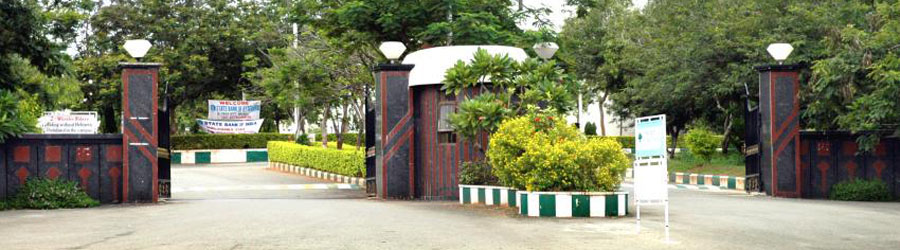

How to Reach
1. Reaching Hyderabad by a train and getting down at the Hyderabad (Nampally) station would be the easiest way to reach us. The institute is 16km from Nampally railway station. From the railway station one can take an auto or APSRTC bus (Nos: 216 & 217) to reach IIIT-H. The auto would cost around Rs.250/- and bus fare would be around Rs.40/-.
2. If one is coming from Secunderabad station which is around 23km from IIIT-H, the auto fare would be roughly around Rs.350. One can take an APSRTC bus to Mehdipatnam (Nos:5 & 49M), and another bus from Mehdipatnam to IIIT-H (Nos: 216, 217).
3. If you are booking a cab it would cost around Rs. 850. And if you are taking airport buses (Pushpak airport bus) it would cost Rs. 200 to reach Gachibowli ORR Entrance and from their the sharing auto would cost Rs. 20 to reach IIIT-H
4. Lingampalli, which is just 7 kms from IIIT-H. Autorickshaws and shared mini-taxis (tempos) are available. Shared auto fare would be Rs.15/-.
From Airport
Using Local Trains (MMTS)
View Larger Map